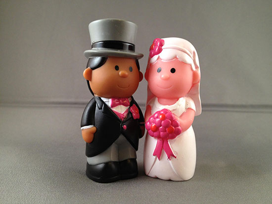

Breakup Example
Alice & Bob were a couple
Alice & Bob bought some sweets togeter
Now Alice and Bob have decided to split up. But who gets which sweets?
Currently deciding this can be fraught, time consuming, expensive and can leave everybody feeling worse.
Here is a process Alice and Bob could follow that is transparent, clear, quick, cheap, impartial and would leave them both feeling they had gotten at least their fair share? Fair means they get at least the 50% each they would expect.
For each item Alice puts a figure on what % satisfied she would be if she got this item. Everything in the collection is 100% what each person can desire. In the output of the process she is allocated a collection of items. We sum up how satisfied she is with each item to get her satisfaction with that allocation. Bob goes through the same steps. Our process makes sure everyone gets as much as possible given their values on the items. The allocation is done in a way that maximizes the minimum allocation anyone can get.
The sweets that are shared possessions of Alice and Bob are entered into the fairandsquare.ie system.
Next Alice inputs how much she values each of the sweets. She does this where Bob cannot see her valuations to preserve her privacy. Then Bob enters his valuations privately.

A dividable object is something like fudge or cash that can be broken up. An indivisible item is something like a smartie or a chair that cannot be split into parts.
The values Alice and Bob placed on each of the sweets were
| Sweet | Bob | Alice | Dividable |
| Red String | 15 | 15 | Yes |
| Teeth | 10 | 05 | Yes |
| Cola Bottle | 10 | 05 | Yes |
| Jelly Beans | 25 | 10 | No |
| Smiley Face | 10 | 05 | Yes |
| Banana | 10 | 20 | Yes |
| Milk Bottle | 05 | 10 | Yes |
| Mini Egg | 05 | 10 | No |
| Smarties | 05 | 10 | No |
| Fried Egg | 05 | 10 | Yes |
Based on these values the process gives a suggested allocation of
This figure of 65% satisfied each is more than the fair 50%. Alice and Bob consider this to be an acceptable allocation and they are happy.
If you have some questions about the process hopefully they are answered in out FAQ or you can email us on info@fairandsquare.ie